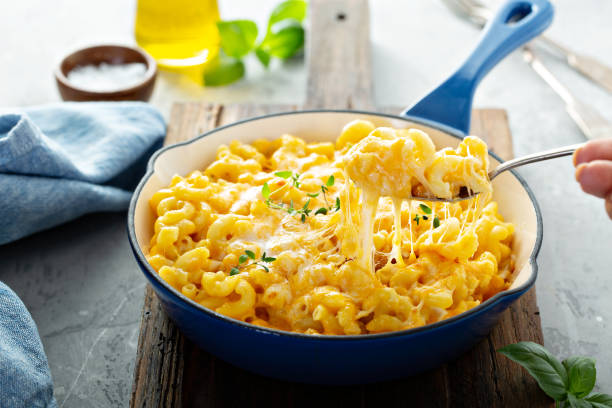

Mac And Cheese Recipe

Click here for detailed Mac and Cheese
recipe
Description
This mac and cheese recipe with a buttered bread crumb topping is creamy and comforting
Ingredients
- Macaroni
- Butter and flour
- Milk
- Cheese
- Seasonings: paprika,salt and pepper
- Bread crumbs
Steps
- Step 1: Boil the noodles: Boil the macaroni in salted water until the noodles are al dente.
Drain and transfer to a prepared baking dish.
- Step 2: Make the cheese sauce: Melt butter, then whisk in the flour. Whisk in the milk,
bring to a simmer, and stir in the cheeses. Season with salt and pepper and continue simmering until the
sauce is thick. Pour the sauce over the noodles and stir.
- Step 3: Make the topping: Melt two tablespoons of butter in a skillet, add the bread
crumbs, and toast until the crumbs are brown. Spread the topping over the macaroni and cheese, then sprinkle
with paprika.
- Step 4: Bake the mac and cheese: Bake in the preheated oven until the topping is golden
brown.